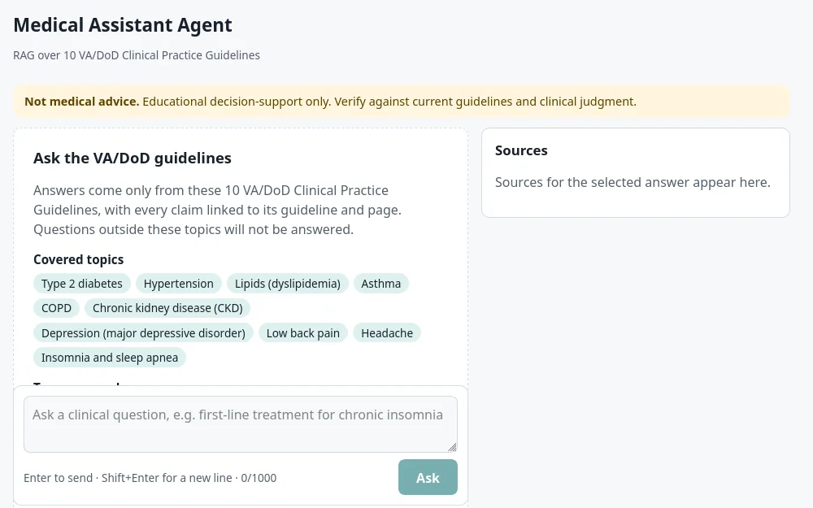

GENERATIVE AI · RETRIEVAL-AUGMENTED GENERATION
Medical Assistant Agent
Built a clinical decision-support assistant that answers questions from 10 VA/DoD clinical practice guidelines and cites the guideline and page for every claim. It scored 4.38 / 5 on answer correctness against about 2.2 for a plain LLM, and declined every out-of-scope question. Includes hybrid retrieval, a React chat UI with a sources panel, an LLM-as-judge evaluation harness, Docker and CI. Educational project, not medical advice.
PythonRAGLLMsOpenAI APIGPT-4o-miniLangChainFastAPIChromaDBEmbeddingsHybrid Search (BM25)PyMuPDFReactTypeScriptViteVitestLLM EvaluationDockerNginxGitHub ActionsHugging Face Spaces